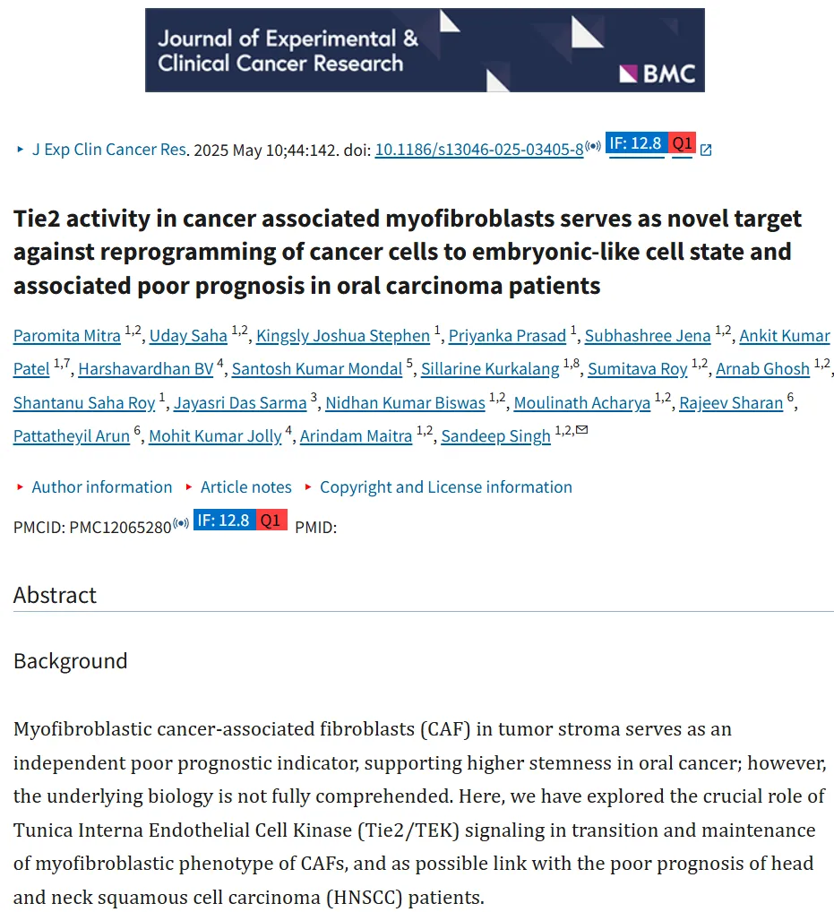
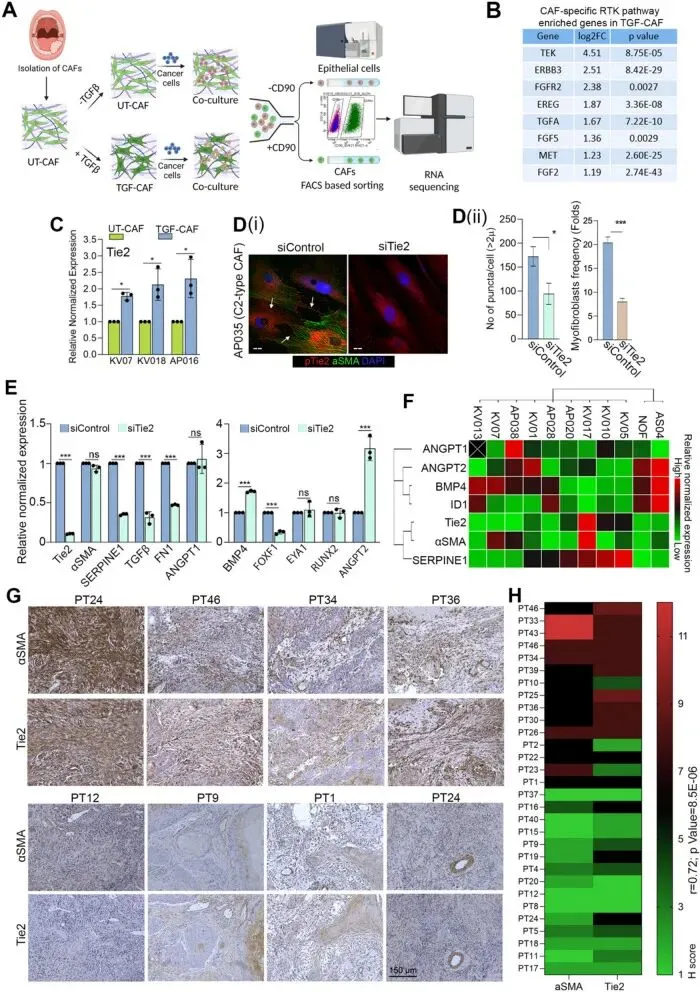
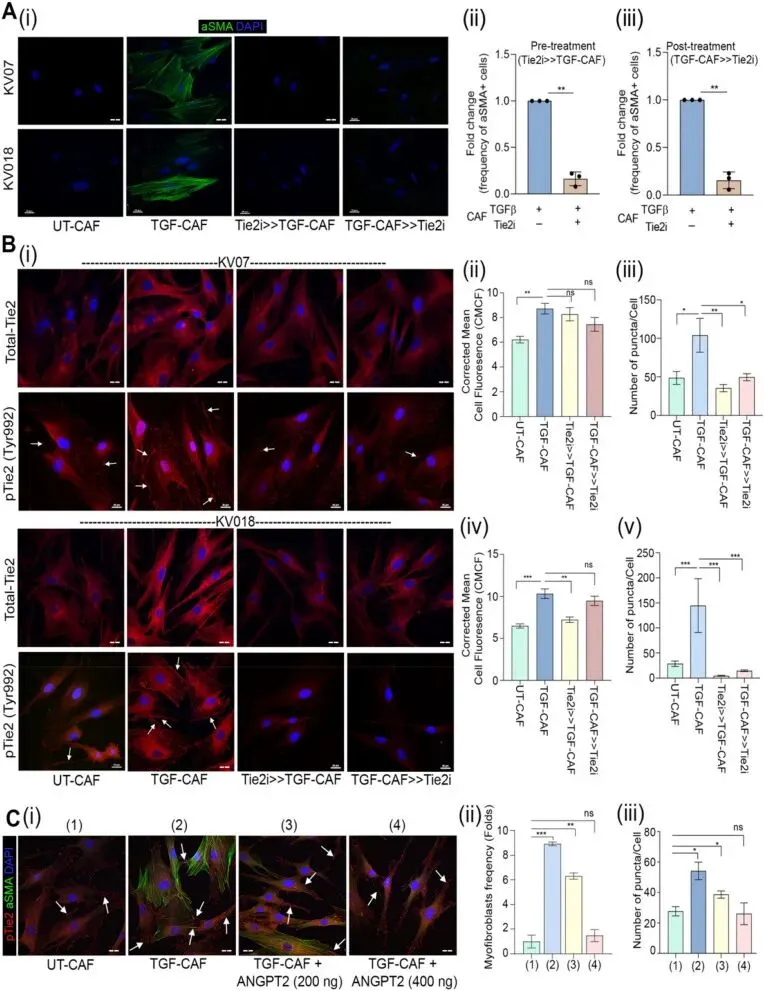
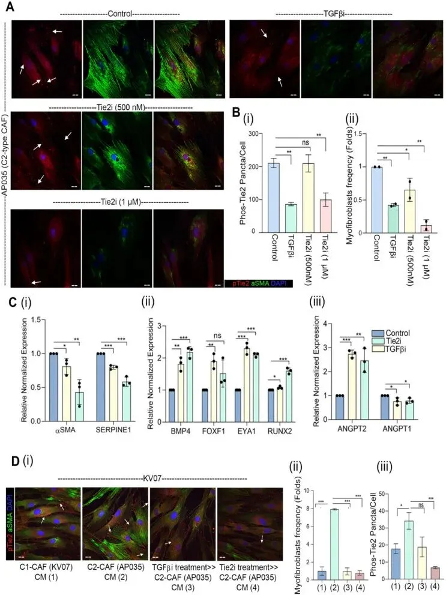
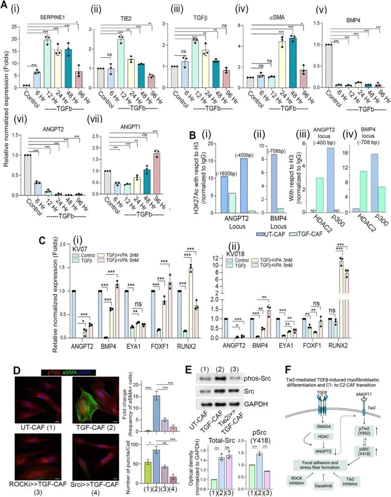
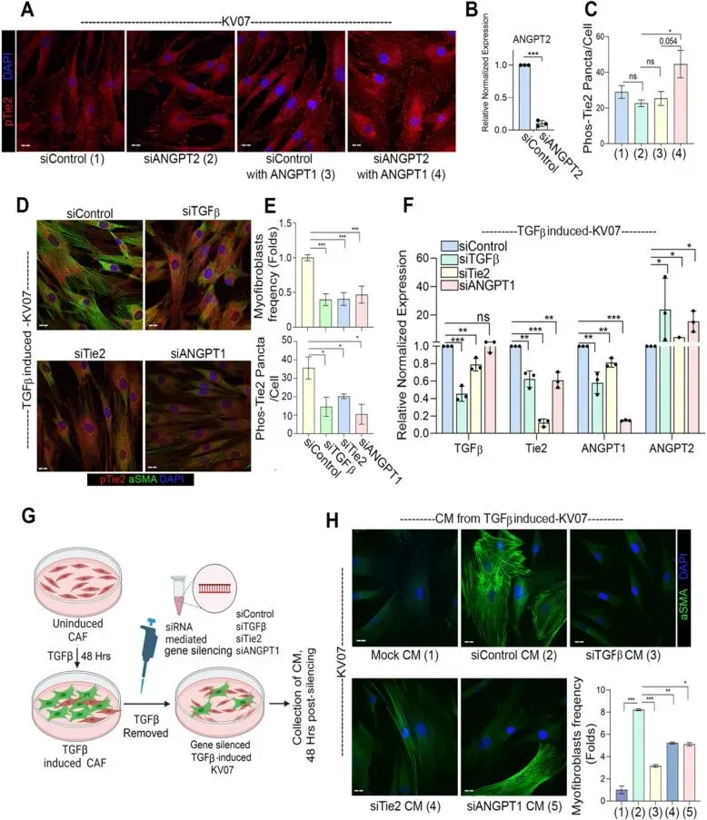
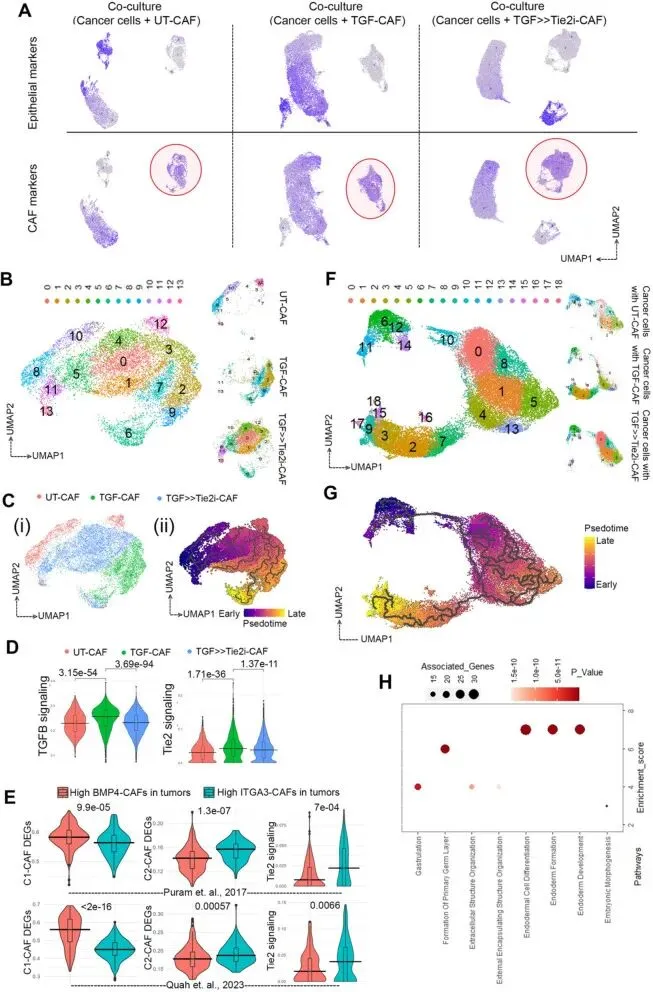
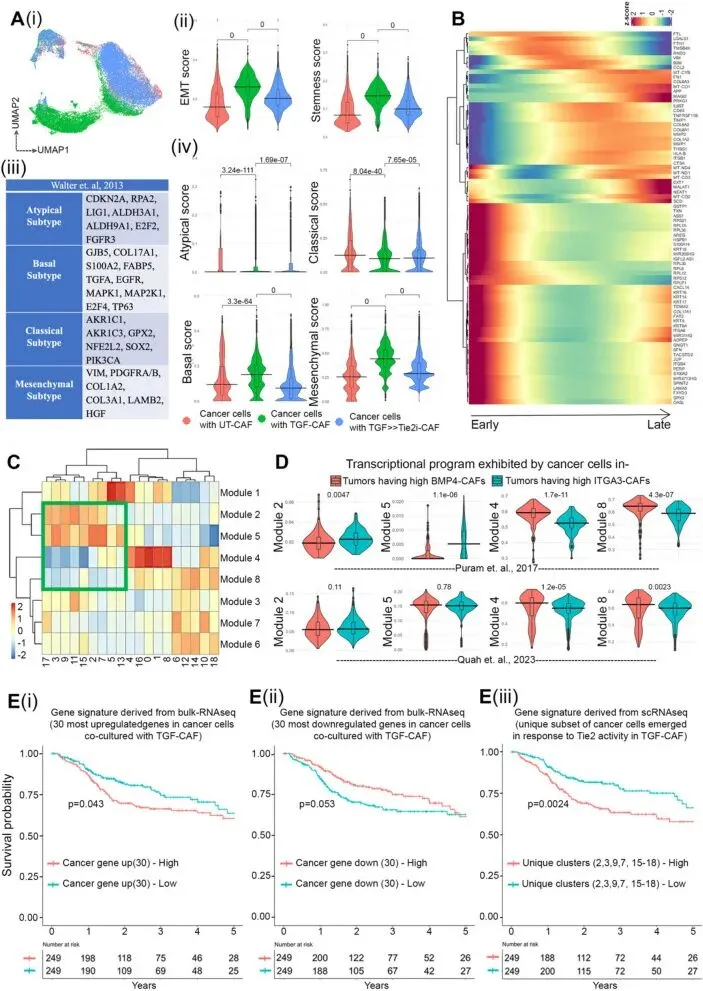
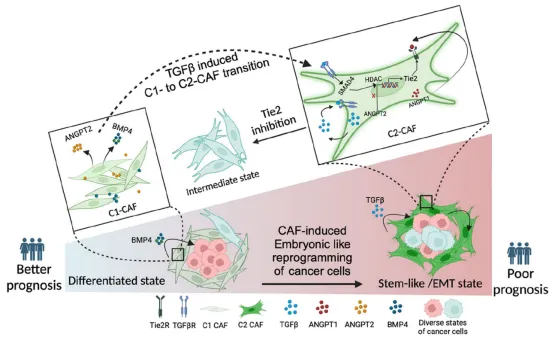

Tie2重编程| 癌症肌成纤维细胞→胚胎样细胞
原文：https://mp.weixin.qq.com/s?__biz=MzAwMzIzOTk5OQ==&mid=2247530312&idx=1&sn=97937cb0f5c0485beae470cdfbb24df7&chksm=9b3c0e18ac4b870efa8657ae7c57225ba2360b8b80e5dcf0b8218f8fee7cea645c790b4fdf68#rd 合集：文献速递
一、写在前面
本次分享的是《Journal of Experimental &Clinical Cancer Research》（IF=11.4）的文章****，**** 感兴趣的同学可以看看原文：Paromita Mitra, Uday Saha, Kingsly loshua Stephen',et al."Tie2 activity in cancer associatedmyofibroblasts serves as novel targetagainst reprogramming of cancer cellsto embryonic-like cell state and associated poorprognosis in oral carcinoma patients" ，DOI: 10.1186/s13046-025-03405-8

文章背景：
肿瘤微环境中的癌症相关成纤维细胞（CAF）已知会发生变化，通常会促进肿瘤的生长和存活，因此，可以通过调节CAF的活性以干扰其与癌细胞的相互作用，并有望创新治疗策略；然而，针对CAF的靶向治疗仍有待阐明。这可能主要是因为CAF是一个异质性群体，其作用可能因环境而异。**内皮细胞内层激酶 2（Tie2）基因，也称为TEK或血管生成素-1受体，编码一种受体酪氨酸激酶。**此前作者发现Tie2是患者来源的C2型-CAF中上调最显著的基因之一；然而，其在成纤维细胞中的特异性表达以及在口腔肿瘤微环境生物学中的确切作用仍有待阐明。
这篇文章中，作者通过使用 scRNA-seq 和生化实验验证揭示了 CAF中Tie2活性在促进癌细胞干细胞性和肿瘤进展中的关键作用，为靶向CAF治疗提供了新的理论依据。
** **
如果需要 数据分析指导** 、生信热点全文复现 、自测数据个性化分析 辅导、常态化实验学习，欢迎联系客服微信[Biomamba_zhushou]**
二、主要内容
1. C2-CAF 表达更高水平的Tie2，并且与原发肿瘤中α-平滑肌肌动蛋白（αSMA）高表达的间质成纤维细胞呈正相关。****
已知 TGF-β可以诱导肌成纤维细胞分化，且C2-CAF在之前的研究中表现出肌成纤维细胞表型。因此，作者首先测试了C1-CAF在TGF-β诱导下是否能够转变为C2-CAF状态，结果显示TGF-β可以将C1-CAF（αSMA低表达）转化为C2-CAF（αSMA高表达）。为了便于理解，文中将未处理的C1-CAF标记为UT-CAF，TGF-β诱导的C1-CAF标记为TGF-CAF。
之后作者将UT-CAF或TGF-CAF与癌细胞共培养，通过流式细胞分选（ FACS）分离细胞后进行bulk RNA-seq （Fig.1A）。对测序结果分析发现，Tie2（也称为TEK）是最显著上调的受体酪氨酸激酶（Fig.1B），同时这一结果通过RT-qPCR 进行了验证（Fig.1C），提示Tie2可能在CAF的肌成纤维细胞表型和C2样状态的维持中发挥重要作用。在此基础上，作者在患者来源的C2-CAF细胞中转染 siRNA沉默Tie2，观察其对肌成纤维细胞表型和基因表达的影响。结果显示沉默Tie2后，C2-CAF中肌成纤维细胞的比例显著降低（Fig.1D）,C2-CAF相关基因（如SERPINE1、FN1、TGF-β）表达下调，而C1-CAF相关基因BMP4表达上调（Fig.1E）。基于基因表达的无监督聚类分析 显示，Tie2与αSMA和SERPINE1聚为一组（Fig.1F），证实了两者的相关性，作者还在临床肿瘤样本中通过免疫组化IHC 评估了肿瘤间质中αSMA和Tie2的表达，发现αSMA高表达的间质成纤维细胞肿瘤中，Tie2的H评分显著高于αSMA低表达间质的组织****（ Fig.1G-H）。 以上结果证明Tie2的表达与CAF的肌成纤维细胞表型和C2样状态密切相关，Tie2的沉默可以逆转CAF的C2样状态。
相关实验教学可参考：实验基地也有小学期~

Fig.12.Tie2 在TGF-β诱导的CAF肌成纤维细胞分化中发挥关键作用。****
为探究 Tie2功能是否对TGF-β诱导的肌成纤维细胞分化至关重要，作者经Tie2特异性小分子抑制剂（Tie2i）预处理1小时后，再诱导TGF-β，免疫荧光（ IF）结果显示，与DMSO对照组相比，两种不同患者来源的C1-CAF中肌成纤维细胞的比例显著降低（Fig.2A）,之后作者通过IF 观察了TGF-β诱导后Tie2蛋白的总表达量和磷酸化水平的变化，TGF-β诱导后，CAF中Tie2蛋白的总表达量显著增加，同时Tie2磷酸化（Y992）的频率也显著增加（Fig.2B）。使用可溶性ANGPT2（已知为Tie2的拮抗剂）来抑制Tie2信号，也得到了相同的结论（Fig.2C）。以上结果显示Tie2的激活是肌成纤维细胞表型形成和维持的必要条件，而Tie2抑制剂（如Tie2i）或其拮抗剂（如可溶性ANGPT2）能够有效逆转这一过程。

Fig.2
3.Tie2 活性通过自分泌方式调控。****
为进 一步揭示TGF-β和Tie2在CAF中的联系，作者在具有组成型肌成纤维细胞表型的患者来源C2-CAF（AP035）上使用了这些信号通路的药理学抑制剂（Fig.3A），使用Galunisertib（TGF-β抑制剂，TGFβi）或Tie2抑制剂（Tie2i）单独处理后，IF 结果显示，与对照组相比，组成型磷酸化Tie2（Y992）阳性斑点的频率以及肌成纤维细胞的比例均显著降低（Fig.3Bii），表明TGF-β受体的激活可能是C2-CAF中Tie2组成型激活的原因，且这种激活是细胞自主的。更有趣的是，经过TGF-β和Tie2抑制处理的C2-CAF中，C2-CAF相关基因（αSMA和SERPINE1）表达显著下调，而C1-CAF相关基因（BMP4和ANGPT2）表达上调（Fig.3Ci-iii）。这表明C2-CAF可能通过抑制TGF-β和Tie2信号通路重新转变为C1-CAF。收集C1-CAF和C2-CAF的条件培养基，并将其分别作用于C1-CAF（Fig.3Di）。结果显示，C2-CAF的条件培养基足以增加C1-CAF中肌成纤维细胞的频率和磷酸化Tie2（Y992）阳性斑点的数量（Fig.3Dii）。当C1-CAF暴露于经过TGF-β或Tie2抑制处理后的C2-CAF条件培养基时，这种增加显著减少（Fig.3Diii）。以上结果表明C2-CAF通过自分泌TGF-β信号维持Tie2活性。

Fig.3
4.TGF-β诱导的组蛋白去乙酰化驱动 C1-CAF向C2-CAF转变的转录状态变化。****
上述实验作者已经发现 TGF-β在CAF的肌成纤维细胞分化中起关键作用，但其具体的分子机制尚未完全明确。为探究其潜在机制，作者对CAF经TGF-β诱导，并在不同时间点（6小时、12小时、48小时、96小时）经RT-qPCR 检测基因表达变化。结果显示，TGF-β通过快速抑制ANGPT2，随后上调内源性TGF-β、Tie2和ANGPT1，形成一个正反馈环路，促进CAF从C1型向C2型转（Fig.4A）。与此同时，作者经Chip-qPCR 检测H3K27ac 在ANGPT2和BMP4基因启动子的富集状态，其用于指示基因启动子和增强子区域的活跃状态。 结果显示，TGF-β诱导后，ANGPT2和BMP4基因启动子位置H3K27ac富集明显减少（Fig.4B），同时，TGF-β诱导后，ANGPT2和BMP4启动子位置组蛋白去乙酰化酶2（HDAC2）结合增加，而乙酰转移酶（p300）的结合减少（Fig.4B），添加去乙酰化抑制剂后，TGF-β对C1-CAF相关基因的抑制显著降低（Fig.4C）。以上结果说明组蛋白去乙酰化是TGF-β诱导CAF状态转变的关键步骤。Tie2通路中Src激酶或ROCK活性与肌成纤维细胞分化 也息息相关**，** 作者通过IF 和western blot发现抑制Src激酶或ROCK活性均显著减少了应激纤维的形成和Tie2的磷酸化（Fig.4D），Tie2抑制显著减少了Src的磷酸化（Y418），表明Tie2在TGF-β诱导的Src激活中起关键作用（Fig.4E）。

Fig.45.内源性 TGF-β对驱动 Tie2-ANGPT信号通路是必需的。****
在上文的基础上，作者进一步关注了内源性 TGF-β 在驱动Tie2-ANGPT 信号通路中的作用。首先在C1-CAF中通过转染 siRNA中沉默ANGPT2，观察其对Tie2磷酸化（pTie2 Y992）的影响，发现pTie2 Y992并未发生变化（Fig.5A），但额外添加ANGPT1，pTie2（Y992）阳性斑点显著增加（Fig.5B-C），说明ANGPT2的下调是ANGPT1诱导Tie2磷酸化的必要条件，但单独沉默ANGPT2不足以激活Tie2。作者还发现沉默Tie2或ANGPT1显著降低了TGF-CAF中pTie2（Y992）的水平，并减少了肌成纤维细胞的比例（Fig.5D-E）。而且沉默TGF-β后，ANGPT2的表达显著增加，表明TGF-β、Tie2和ANGPT1可能处于一个相互调控的信号环路中（Fig.5F）。当UT-CAF暴露于经过TGF-β、Tie2或ANGPT1沉默处理的TGF-CAF的条件培养基时，肌成纤维细胞的比例也显著降低（Fig.5G-H）。通过以上实验，作者发现内源性TGF-β在驱动Tie2-ANGPT信号通路中起着必要且充分的作用。

Fig.5****6.CAF 特异性Tie2活性调节口腔癌细胞的可塑性和干性****
为深入了解不同 CAF表型之间的相互作用及其对口腔癌细胞的影响，作者进行了单细胞 RNA测序（scRNA-seq ），分别对与UT-CAF、TGF-CAF或TGF-β诱导后Tie2抑制的CAF（TGF >> Tie2i-CAF）共培养的口腔癌细胞进行分析，经UMAP 降维分析，作者展示了三种不同的细胞群（Fig.6A-B），通过Monocle3 进行拟时分析 ，以研究CAF表型的演变，结果显示TGF-CAF主要起源于UT-CAF，Tie2抑制后TGF-CAF向UT-CAF逆转（Fig.6C）。进一步对特定基因表达进行分析，使用scRNAseq 差异表达基因（DEGs）对患者群体进行分类，并进行AUCell 评分，与TGF-β或Tie2信号相关基因集相关的评分显示，TGF-CAF对两种信号的评分显著更高，而在TGF >> Tie2i-CAF中显著下调（Fig.6D-E）。拟时分析结果还显示与TGF-CAF共培养的癌细胞表现出显著的转录重编程，而这种重编程在Tie2抑制后会被破坏（Fig.6F）,表示与TGF-CAF共培养的癌细胞在转录状态上获得了更进化的状态（Fig.6G）。与此同时，将与TGF-CAF共培养的癌细胞中上调的基因与bulk RNA-seq数据中上调的基因进行对比分析，作者识别出了50个与早期发育相关的DEGs，印证了TGF-CAF诱导的癌细胞获得了转向胚胎样的重编程（Fig.6H）。
单细胞分析教程可参考：生信基地122篇单细胞教程全索引

Fig.6GSEA 分析显示(基因集富集分析)，与TGF-CAF共培养的癌细胞中富集了干细胞、上皮-间充质转化（EMT）、细胞因子相互作用的基因集，而细胞周期相关基因集则显著下调（Fig.7A），ALDH高表达的细胞（ALDH High）常被用作癌症干细胞（CSCs）的标志物，且在3D 球形培养中表现出更高的肿瘤形成能力和干性征。测序结果显示ALDH高表达细胞的比例在与TGF-CAF共培养的癌细胞中显著增加（Fig.7B），干性相关基因表达明显上调（Fig.7C）。使用Tie2抑制剂（Tie2i）或Tie2沉默（siTie2）处理TGF-CAF后，干性相关基因的表达显著下调，3D球体形成能力也显著降低（Fig.7D）。
为探究CAF特异性Tie2活性对肿瘤形成能力的影响，作者将使用GFP标记的SCC070口腔癌细胞，分别暴露于UT-CAF、TGF-CAF或TGF >> Tie2i-CAF的条件培养基中，然后将细胞注入斑马鱼胚胎的卵黄囊中，观察肿瘤形成能力， 结果显示与TGF-CAF共培养的癌细胞在斑马鱼胚胎中形成最多的肿瘤灶，并且导致最高的胚胎死亡率（Fig.7E-F）。以上结果表明，CAF中的Tie2活性显著增强了癌细胞的肿瘤形成能力，而Tie2抑制能够显著抑制这种能力。使用C57BL/6小鼠口腔癌细胞系MOC2，检测其在不同条件培养基中的3D 球体形成能力和体内肿瘤形成能力，结果显示MOC2细胞在TGF-CAF条件培养基中形成的3D球体数量显著增加，在TGF>>Tie2i-CAF条件培养基中，3D球体形成能力显著降低（Fig.7G）。以上结果表明，CAF中的Tie2活性在调节癌细胞的干性和肿瘤形成能力中起关键作用。
7.Tie2 响应的单细胞基因表达数据与HNSCC患者的临床结果相关****
为了评估体外实验结果 的临床意义，作者利用单细胞RNA测序（scRNA-seq）数据，分析了CAF亚型对癌细胞转录状态的影响，并将其与头颈部鳞状细胞癌（HNSCC）患者的临床结果相关联。首先，作者发现与TGF-CAF共培养的癌细胞中，EMT和干性相关基因的表达显著富集（Fig.8A）,且与TGF-CAF共培养的癌细胞中基底型和间充质型基因表达特征的富集显著更高，通过拟时分析(一文学会四种scRNA-seq轨迹分析)，作者整理了在癌细胞重编程过程中差异表达的基因（Fig.8B），构建了癌细胞的核心调控基因模块，共识别出8个动态调控的基因模块（Fig.8C-D），这些基因模块的动态变化表明Tie2活性在TGF-CAF诱导的癌细胞重编程中起关键作用。之后，作者利用bulk RNA-seq数据中与TGF-CAF共培养的癌细胞与UT-CAF共培养的癌细胞之间的DEGs，与TCGA数据库中HNSCC患者的表达数据进行相关性分析 ,在所有比较中，对上调基因集（前30个基因）ssGSEA评分较高的患者显示出较差的生存率（Fig.8E）。这些结果支持了CAF特异性的Tie2活性在HNSCC患者中驱动癌细胞重编程的假设。

Fig.8三、总结讨论
此研究提供了靶向CAF（癌症相关成纤维细胞）中激活的Tie2 信号通路的证据和论据，可以作为对抗 TGF-β在口腔肿瘤微环境中关键作用的替代方法，这些发现为开发新的治疗策略提供了理论基础，特别是在靶向 CAF中的Tie2信号通路方面，可能为口腔癌患者带来更好的治疗效果和预后。

希望学习实验技能与scRNA-seq分析的同学可以参考：实验基地也有小学期~scRNA-seq小学期
如何联系我们

 留一个领取资料、开箱即用的单细胞分析镜像的微信号[Biomamba_zhushou]，方便各位随时交流。同时我们也构建了交流群矩阵，欢迎大家入群讨论。
大家可以阅读完这几篇之后添加给生信入门初学者的小贴士
没有检索，就没有发言权
留一个领取资料、开箱即用的单细胞分析镜像的微信号[Biomamba_zhushou]，方便各位随时交流。同时我们也构建了交流群矩阵，欢迎大家入群讨论。
大家可以阅读完这几篇之后添加给生信入门初学者的小贴士
没有检索，就没有发言权
已有生信基地联系方式的同学无需重复添加

 您点的每个赞和在看，我都认真当成了喜欢
您点的每个赞和在看，我都认真当成了喜欢